Image Warping and Mosaicing
Part A of [Auto]Stitching Photo Mosaics: recovering homographies from point correspondences, inverse warping with two interpolation methods, rectifying planes, blending photos into mosaics, and a 200° cylindrical panorama.
Every homography on this page comes from my own least-squares solver, fit to 12 correspondences per pair to under 1.2 px. Rectification recovers the real proportions of a rectangle from the phone's focal length. The three mosaics use gain compensation for exposures I did not lock, plus a two-level blend that keeps detail sharp without ghosting. For the bells & whistles, nine photos become a 204° cylindrical panorama, sampled directly from the original photos with camera rotations fitted to every point.
Part A.1: Shoot and Digitize Pictures
All photos are from a Pixel 10 Pro on its main 24 mm-equivalent lens (no ultra-wide, which would add barrel distortion), shot at 4080×3072 and stored here at 2048 px on the long side. For every set I stood in one place and turned the phone around its lens, so that neighbouring photos differ only by a camera rotation and are related exactly by a homography. Neighbouring frames overlap by roughly 40–70%. I did not lock exposure, which shows up later as brightness differences that the blending has to absorb.
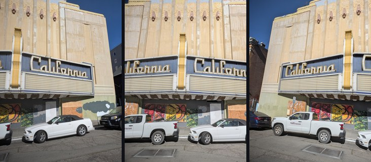
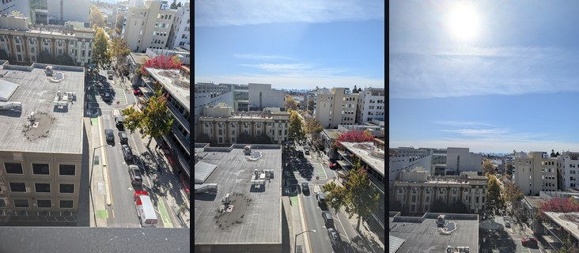
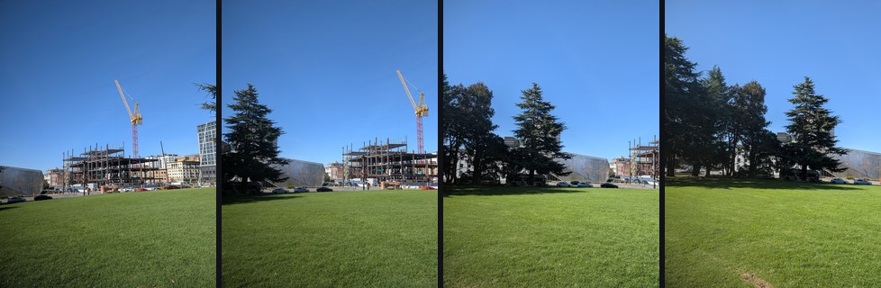
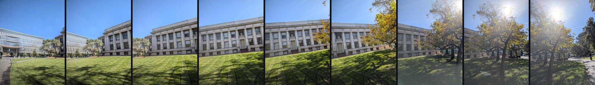
More sets
I used every remaining sequence that had real overlap and was shot from one spot. All of them are used below: six as planar mosaics and three as cylindrical panoramas. I left out only a single photo with no partner, a pair that mixes the ultra-wide and main lenses, near-duplicate frames, and three close-up sets with too much parallax.
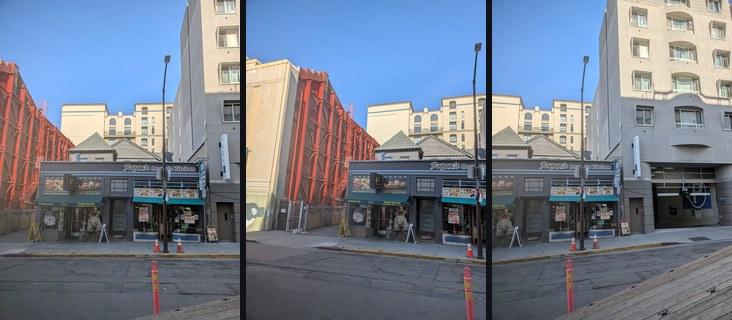
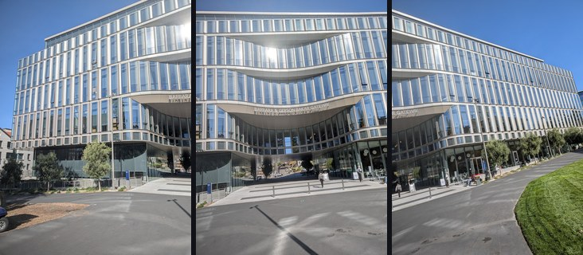
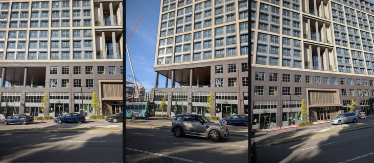
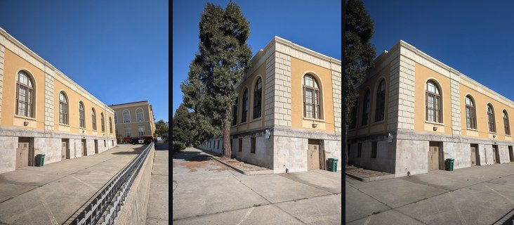
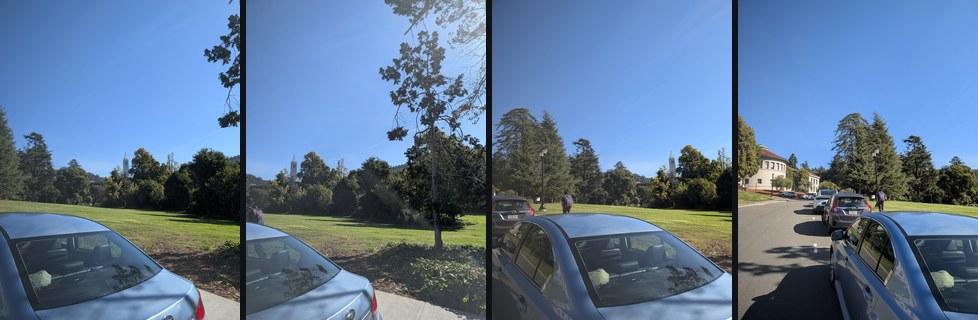
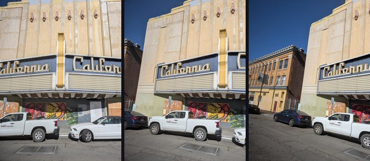
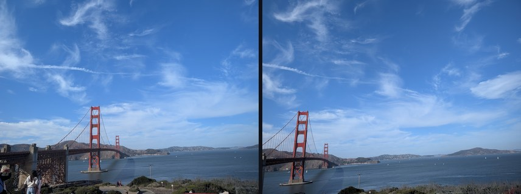
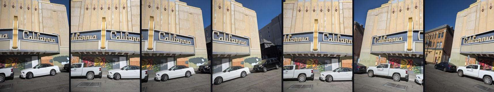
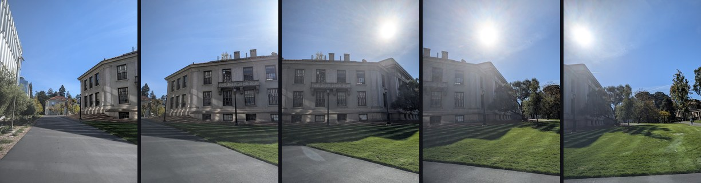
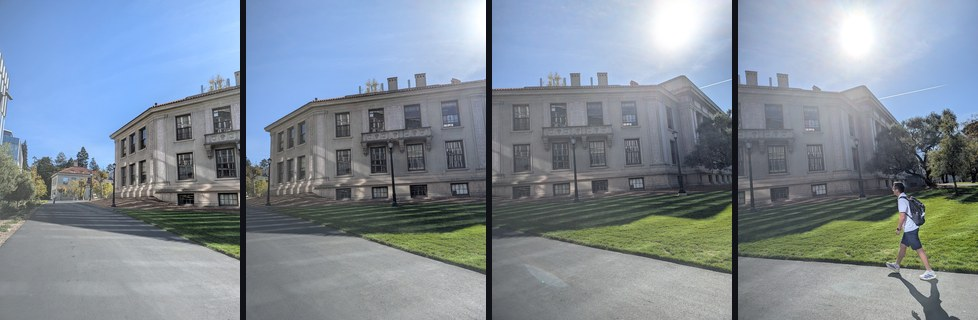
Part A.2: Recover Homographies
A homography maps a point \(p = (x, y, 1)\) in one photo to \(p' \sim Hp\) in the other. Fixing \(h_{33} = 1\) leaves 8 unknowns, and every correspondence \((x, y) \to (u, v)\) gives two linear equations once the perspective divide is multiplied out:
Four correspondences determine \(H\) exactly, but a couple of pixels of error then swing it a lot, so I use 12 per pair and solve the overdetermined \(2n \times 8\) system \(Ah = b\) by least squares. One numerical detail matters here. With raw pixel coordinates, \(A\) mixes entries around \(10^6\) (the \(xu\) terms) with 1s, and its condition number is 1.4 × 107 for the theatre pair. Following Hartley, I first move each point set's centroid to the origin and scale its mean distance to \(\sqrt 2\). That brings the condition number down to 4.9. I then solve and undo the normalization: \(H = T_2^{-1} \tilde H T_1\).
def build_system(im1_pts, im2_pts):
A, b = [], []
for (x, y), (u, v) in zip(np.asarray(im1_pts, float), np.asarray(im2_pts, float)):
A.append([x, y, 1, 0, 0, 0, -x * u, -y * u]); b.append(u)
A.append([0, 0, 0, x, y, 1, -x * v, -y * v]); b.append(v)
return np.array(A), np.array(b)def computeH(im1_pts, im2_pts):
p1, p2 = np.asarray(im1_pts, float), np.asarray(im2_pts, float)
if len(p1) < 4 or p1.shape != p2.shape:
raise ValueError('need n >= 4 matching (x, y) points in each image')
T1, T2 = _normalizer(p1), _normalizer(p2)
n1 = apply(T1, p1)
n2 = apply(T2, p2)
A, b = build_system(n1, n2)
h = np.linalg.lstsq(A, b, rcond=None)[0]
Hn = np.append(h, 1).reshape(3, 3)
H = np.linalg.inv(T2) @ Hn @ T1 # undo the normalization
return H / H[2, 2]Correspondences
Points have to sit on sharp, unambiguous features: window and sign corners, letters, roof edges. A point on a plain wall or in the sky can slide without anyone noticing. I used a small helper (tests/autocorr.py, not part of the graded code) to propose strong corners and match each one in the neighbouring photo. It keeps a point only if its match is clearly unique and agrees with a single homography fitted to all candidates, which throws out moving cars, and then spreads the final points over the overlap. I checked every pair by eye before using it.
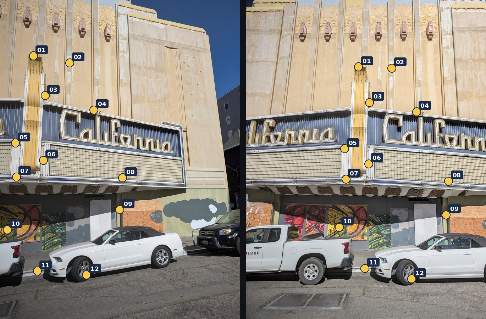
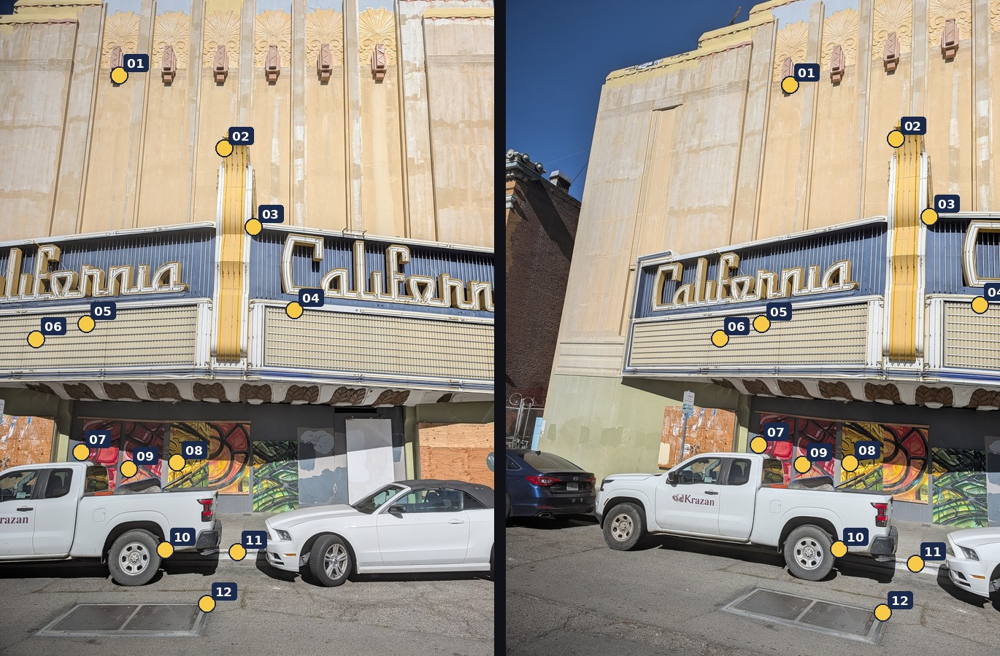
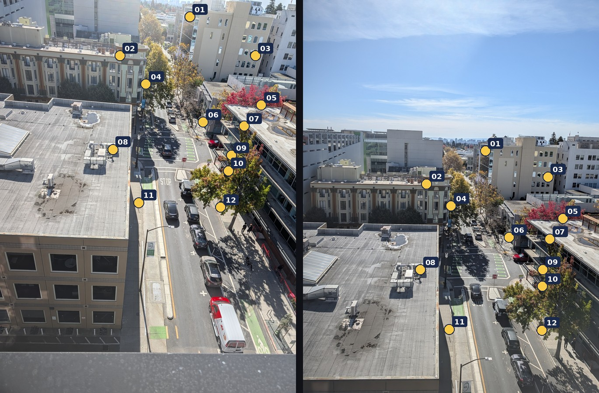
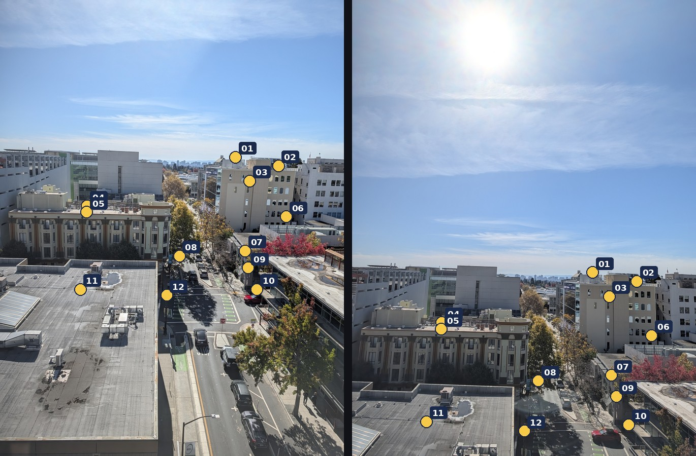
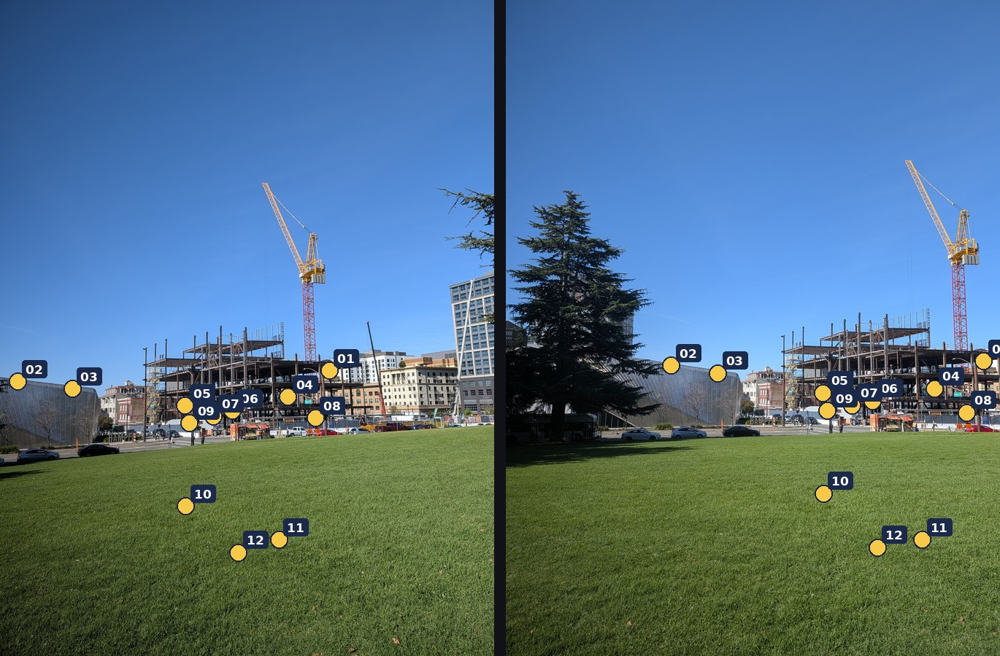
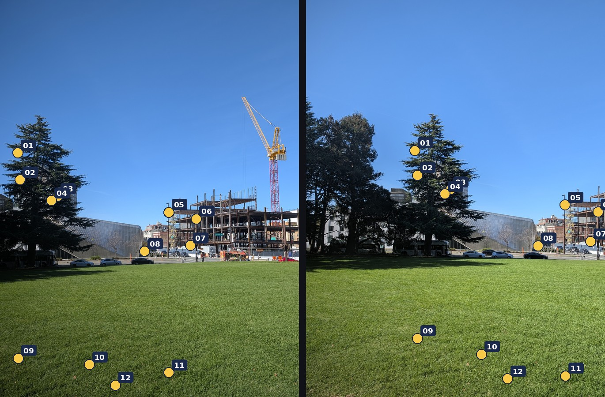
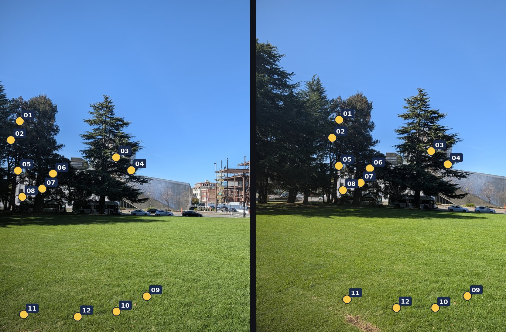
System of equations and recovered homographies
For the theatre pair 1 → 2, the first two correspondences produce these four rows of \(Ah = b\). The full system has \(2 \times 12\) rows:
Recovered homographies (\(h_{33} = 1\)):
The residual after the fit is how far each point lands from its clicked partner when mapped through \(H\). Every pair fits with a median residual of 0.4–0.7 px, and no point is off by more than about 1.1 px, on 2048 px photos:
| Pair | Points | Median residual | Max residual |
|---|---|---|---|
| theatre 1 → 2 | 12 | 0.70 px | 1.08 px |
| theatre 2 → 3 | 12 | 0.42 px | 1.14 px |
| rooftop 1 → 2 | 12 | 0.67 px | 1.02 px |
| rooftop 2 → 3 | 12 | 0.51 px | 1.04 px |
| lawn 1 → 2 | 12 | 0.55 px | 1.01 px |
| lawn 2 → 3 | 12 | 0.45 px | 0.88 px |
| lawn 3 → 4 | 12 | 0.50 px | 0.92 px |
| street 1 → 2 | 12 | 0.52 px | 1.09 px |
| street 2 → 3 | 12 | 0.46 px | 0.83 px |
The table shows the pairs behind the three main mosaics. Across all 44 neighbouring pairs used on this page, the median residual ranges from 0.15 to 0.70 px, and the single worst point is 1.16 px off.
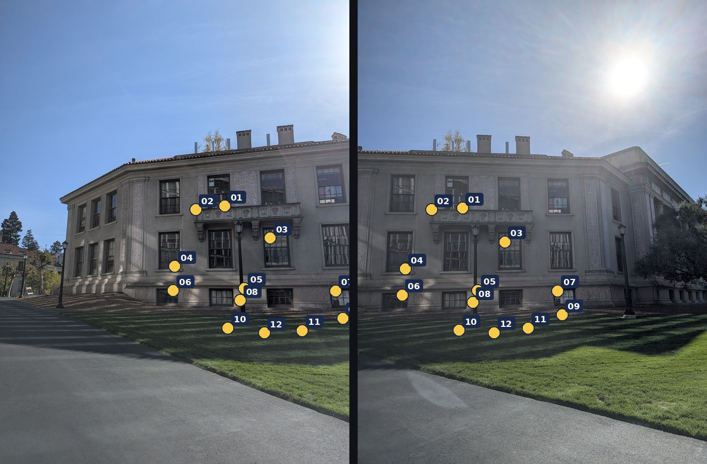
Part A.3: Warp the Images
Both warps are inverse warps. I first push the four image corners through \(H\) to get the output's bounding box. Then, for every output pixel \(p'\), I compute where it came from, \(p = H^{-1}p'\), and sample the source there. Going backwards guarantees exactly one value per output pixel, so there are no holes. Pixel centers sit at integer coordinates, so \((0, 0)\) is the center of the first pixel. Locations that fall outside the source get alpha 0, and that alpha mask later drives the blending. Everything is vectorized over row chunks, so warping a 2048 px photo takes well under a second.
def _nearest(im, sx, sy):
h, w = im.shape[:2]
xi, yi = np.rint(sx).astype(np.int64), np.rint(sy).astype(np.int64)
valid = (xi >= 0) & (xi < w) & (yi >= 0) & (yi < h)
vals = im[np.clip(yi, 0, h - 1), np.clip(xi, 0, w - 1)]
return vals * valid[..., None], valid.astype(np.float32)def _bilinear(im, sx, sy):
h, w = im.shape[:2]
valid = (sx >= 0) & (sx <= w - 1) & (sy >= 0) & (sy <= h - 1)
x0 = np.clip(np.floor(sx).astype(np.int64), 0, w - 2)
y0 = np.clip(np.floor(sy).astype(np.int64), 0, h - 2)
fx = np.clip(sx - x0, 0, 1)[..., None].astype(np.float32)
fy = np.clip(sy - y0, 0, 1)[..., None].astype(np.float32)
top = im[y0, x0] * (1 - fx) + im[y0, x0 + 1] * fx # blend along x ...
bot = im[y0 + 1, x0] * (1 - fx) + im[y0 + 1, x0 + 1] * fx
vals = top * (1 - fy) + bot * fy # ... then along y
return vals * valid[..., None], valid.astype(np.float32)Rectification
To test the warps before building mosaics, I rectified three rectangles photographed at an angle, plus a fourth blind test against a reference photo (below). Corners alone don't give the target shape, because I don't know how big the real rectangle is. But the phone's focal length is known (1422 px from EXIF), and with \(K\) known the homography from a unit square to the photographed quadrilateral factors as \(K^{-1}H \propto [\,r_1\; r_2\; t\,]\). The rectangle's true aspect ratio is then \(h/w = \lVert K^{-1}h_2 \rVert / \lVert K^{-1}h_1 \rVert\). This gives 0.493 for the window block, 2.815 for the cabinet glass, and 0.487 for the theatre marquee. The rectified windows come out square and evenly spaced, which independently confirms the computed ratio.
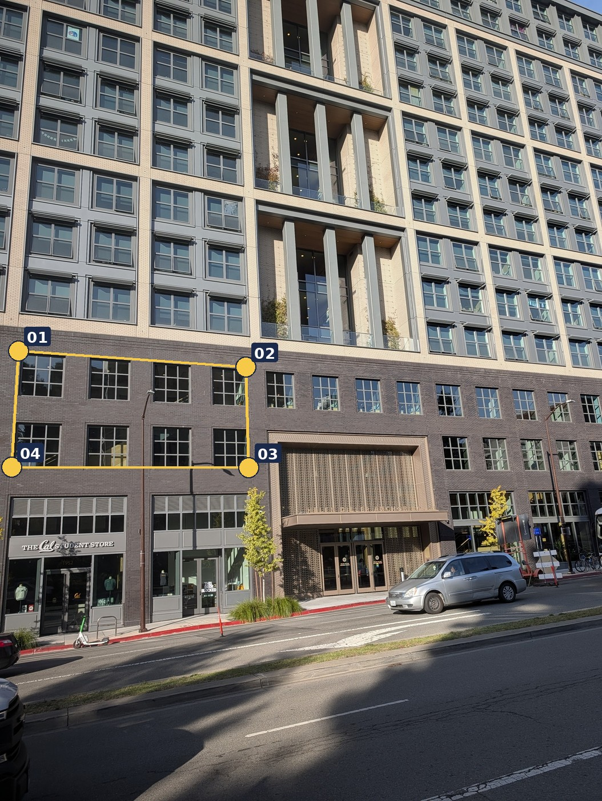
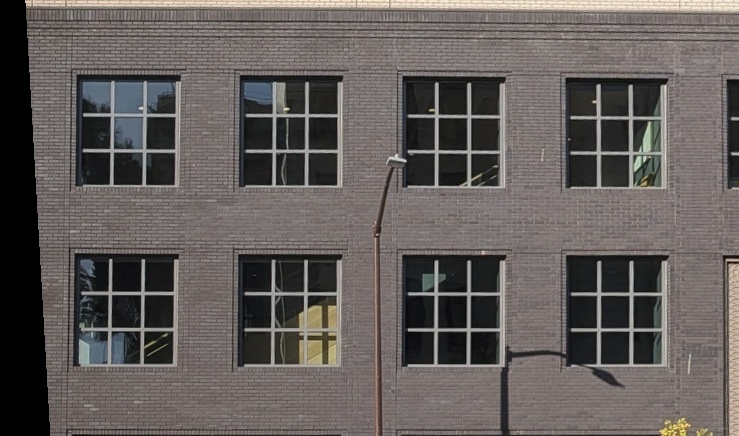
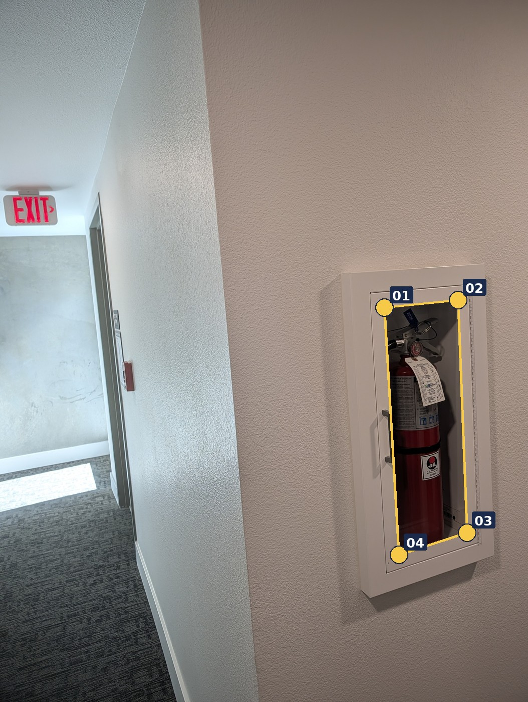
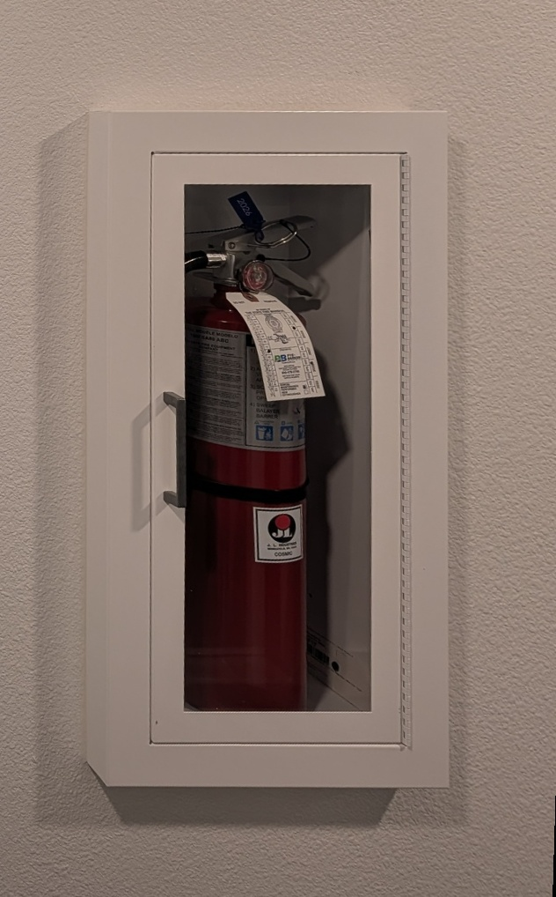
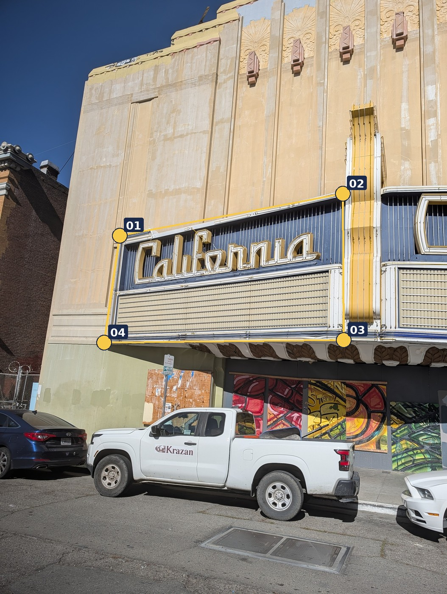
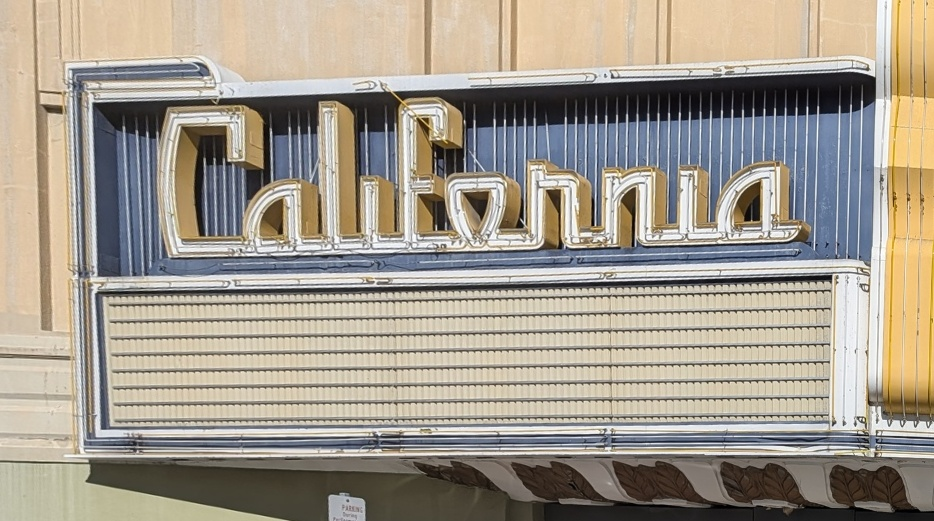
Nearest neighbour vs. bilinear
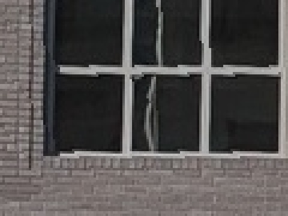
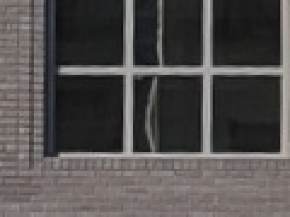
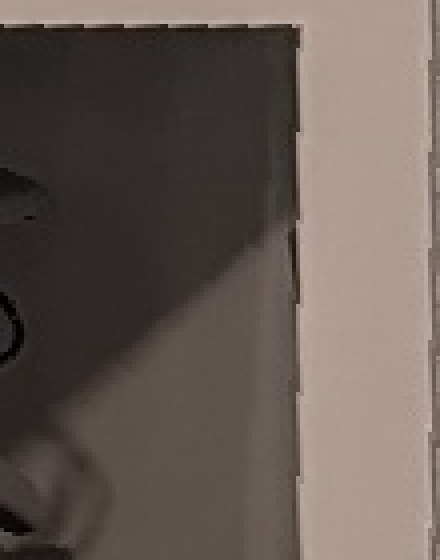
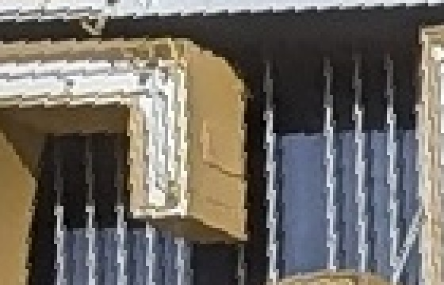
| Rectification | Output | Nearest | Bilinear | Bilinear cost |
|---|---|---|---|---|
| 4 × 2 window block | 739×436 | 18 ms | 50 ms | 2.8× |
| fire-cabinet glass | 632×1018 | 45 ms | 92 ms | 2.0× |
| theatre marquee face | 934×521 | 33 ms | 81 ms | 2.5× |
Trade-off. Nearest neighbour does one lookup per output pixel. Bilinear does four lookups plus three weighted sums, and measured 2.0–2.8× slower here. The quality difference shows wherever the warp stretches or rotates the image: nearest copies whole source pixels, so diagonal edges turn into stair-steps and enlarged areas look blocky. Bilinear averages neighbours, which is slightly softer but continuous. For the mosaics I use bilinear throughout: the extra cost is a fraction of a second per photo, and blocky seams would be far more visible than slight softness.
Blind test: rectify, then compare with a straight-on photo
The examples above are judged by eye. For this one I also took a straight-on reference photo, so the result can be checked with numbers. The relief has no rectangular border, but its wall does: the building corner and the doorway edge are vertical, and the floor line and the doorway's top are horizontal. Three corners of that rectangle are physical points; the fourth is a line intersection. With the focal length, its height/width comes out as 0.584. The reference photo is not used anywhere in the rectification.
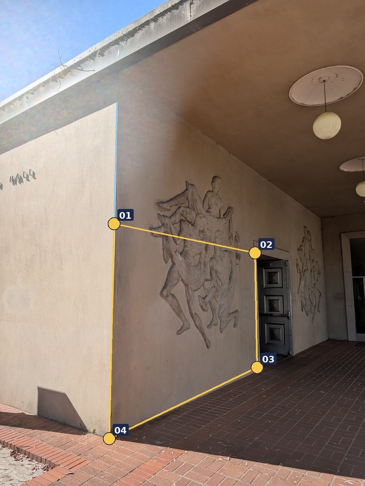
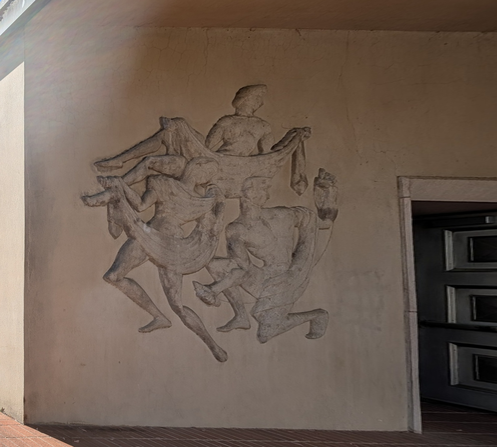
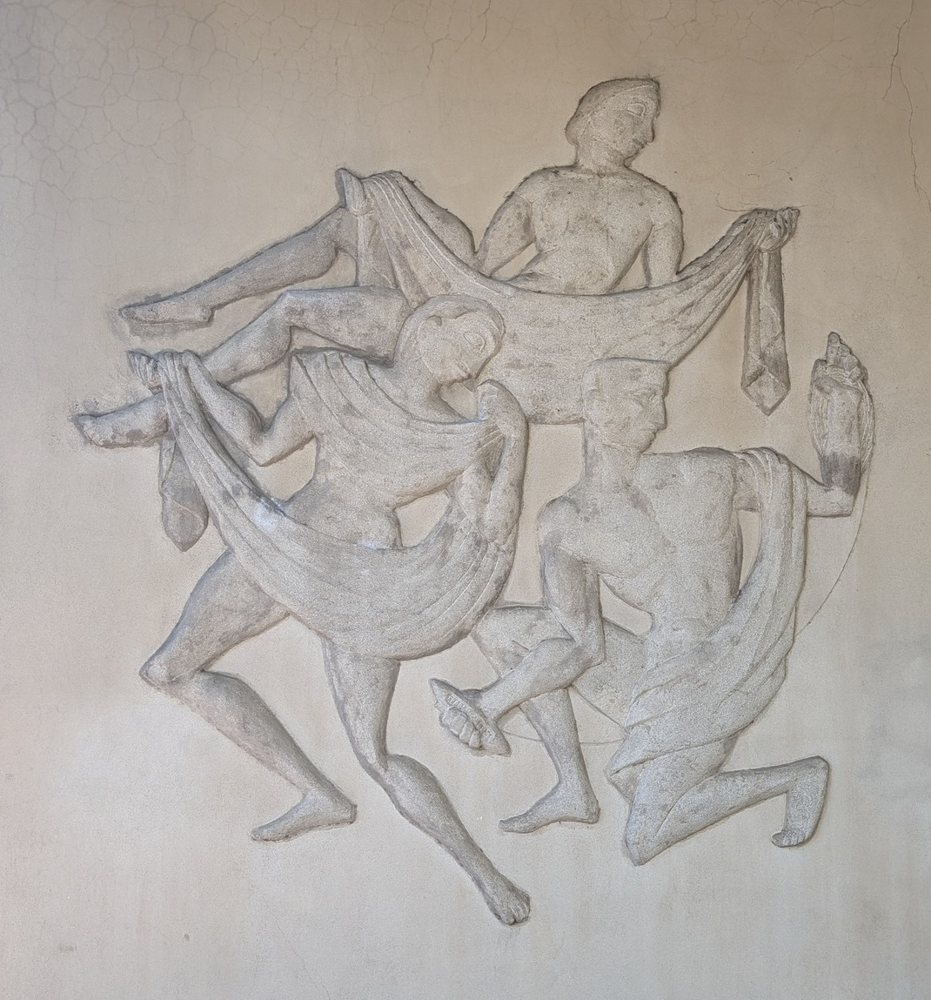
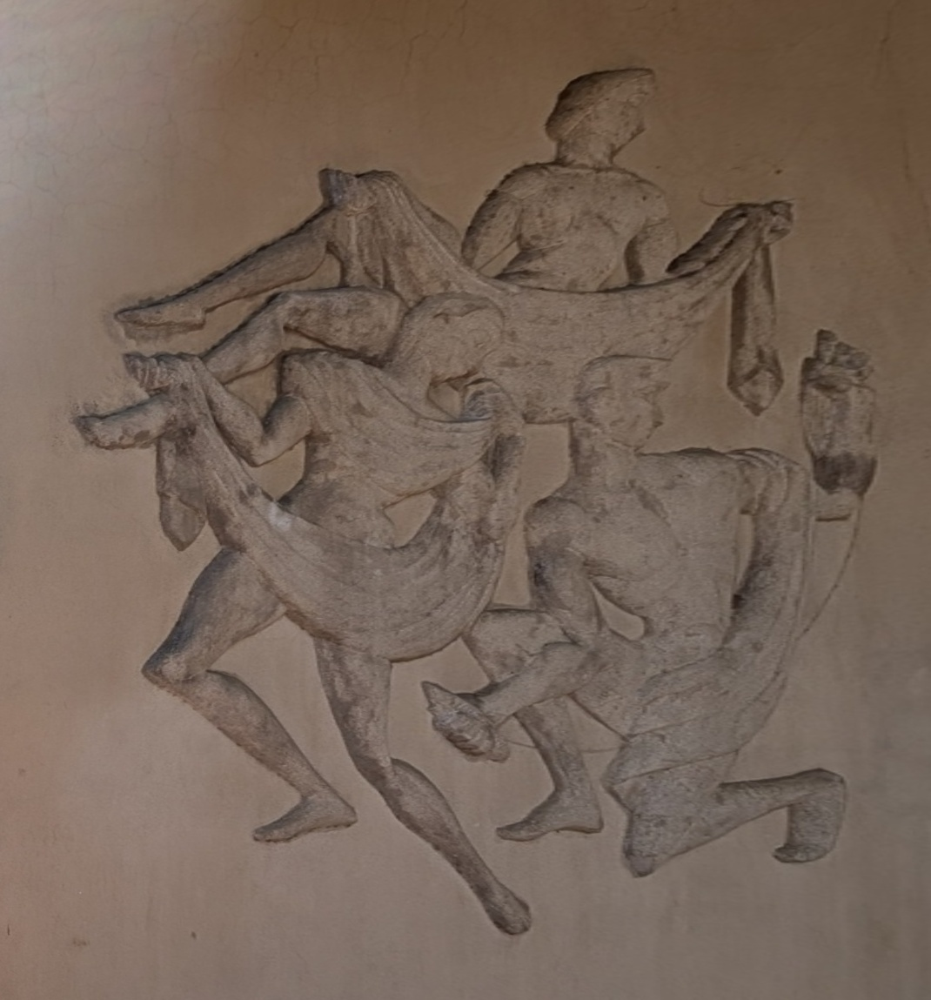
To measure the match, I placed the blind result onto the reference with a similarity seeded from 8 landmark pairs (heads, hands, feet). I then refined 47 strong points on the relief by local patch matching. A perfect rectification would leave only a similarity between the two, so the question is how much a richer transform improves the fit:
| Transform from blind result to reference | Allows | Median residual |
|---|---|---|
| Similarity | shift, rotation, uniform scale | 8.7 px (p90 11.4 px) |
| Affine | + shear, unequal scale | 4.5 px |
| Homography | + perspective | 4.1 px |
Almost all of the remaining error is affine: a 5.4% difference in stretch between two directions, with essentially no rotation (0.05°). Allowing perspective on top barely helps (4.5 → 4.1 px), so no measurable perspective is left. In other words, the blind rectification got the plane's orientation right and is about 5% off in proportions. That is about what to expect from four hand-read corners and a focal length rounded to the nearest millimetre. The last few pixels, about 0.4% of the 870×949 px relief, most likely come from the relief's own depth, since it is sculpted, not flat, and was seen from two very different angles.
Rectification also cannot recover detail the photo never captured. At the relief, the angled photo recorded only 0.47 source pixels per output pixel horizontally (0.80 vertically). The rectified relief is therefore about 2.1× upsampled sideways: the geometry is right, but it is visibly softer than the straight-on reference.
Part A.4: Blend the Images into a Mosaic
I build every mosaic in one shot, in five steps:
- Chain to a reference. The middle photo stays unwarped. Each neighbour homography maps photo \(k\) into photo \(k+1\), so composing them outward gives every photo's homography into the reference.
- Size the canvas as the union of all warped bounding boxes, then warp each photo once, at full resolution, into its own box inside that canvas.
- Gain compensation. I did not lock exposure, so neighbouring photos differ in brightness. On a quarter-size preview I measure each overlap's mean color and solve for one gain per photo and channel (Brown & Lowe's formulation), so that overlaps agree while every gain stays near 1. Without that prior, "all gains = 0" would trivially make every overlap agree.
- Feathering. Each photo's weight is its distance to the edge of its own footprint (the distance transform, MATLAB's
bwdist), so each pixel trusts the photo whose center it is closest to. - Two-level blend (a 2-level Laplacian pyramid). Feathering alone averages misaligned fine detail into faint double edges (ghosting). The spec suggests a 2-level pyramid for exactly this, so I split each photo into a blurred low band (Gaussian, σ = 4 px) and a detail band (photo minus low band). The low band is feathered, which gives a smooth transition in color and exposure. The detail band is taken from whichever photo has the largest weight at that pixel, so edges stay single and sharp.
def chain_to_reference(pair_H, ref):
n = len(pair_H) + 1
Hs = [None] * n
Hs[ref] = np.eye(3)
for k in range(ref - 1, -1, -1): # k -> k+1 -> ... -> ref
Hs[k] = Hs[k + 1] @ pair_H[k]
for k in range(ref + 1, n): # k -> k-1 -> ... -> ref
Hs[k] = Hs[k - 1] @ np.linalg.inv(pair_H[k - 1])
return [H / H[2, 2] for H in Hs]def solve_gains(pairs, n, sigma_n=0.04, sigma_g=0.1):
gains = np.ones((n, 3))
for c in range(3):
A, b = [], []
for i, j, cnt, mi, mj in pairs:
w = np.sqrt(cnt)
row = np.zeros(n); row[i], row[j] = mi[c] * w / sigma_n, -mj[c] * w / sigma_n
A.append(row); b.append(0.0)
for k in (i, j):
row = np.zeros(n); row[k] = w / sigma_g
A.append(row); b.append(w / sigma_g)
if A:
gains[:, c] = np.linalg.lstsq(np.array(A), np.array(b), rcond=None)[0]
return gains| Mosaic | Photos | Canvas | Gains | Overlap difference (before → after gains) | Time |
|---|---|---|---|---|---|
| California Theatre | 3 | 3264×2766 | 1.07 / 0.98 / 0.94 | 0.099 → 0.079 | 13.4 s |
| Rooftop (vertical) | 3 | 2569×4673 | 0.87 / 1.01 / 1.08 | 0.126 → 0.076 | 16.4 s |
| Lawn + crane | 4 | 3578×3355 | 1.11 / 1.02 / 0.91 / 0.88 | 0.128 → 0.080 | 14.0 s |
| Street | 3 | 3341×3593 | 1.00 / 1.02 / 0.99 | 0.053 → 0.051 | 15.8 s |
The gains range from 0.87 to 1.11. The rooftop set needed the most correction: its mean color difference inside the overlaps drops from 0.126 to 0.076 (on a 0–1 scale). Part of the difference that remains is real content: shadows and parked cars that moved, plus fine texture.
Mosaic 1 · California Theatre
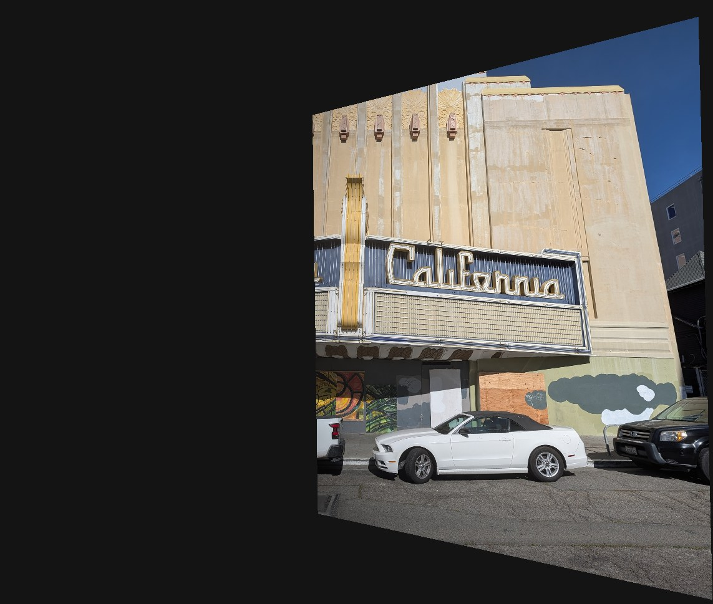
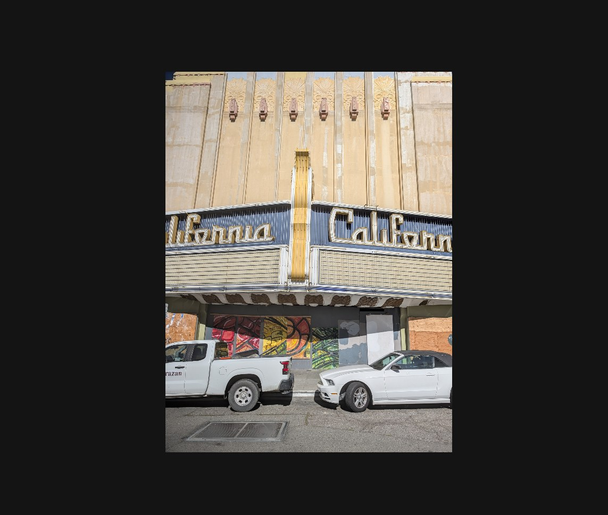
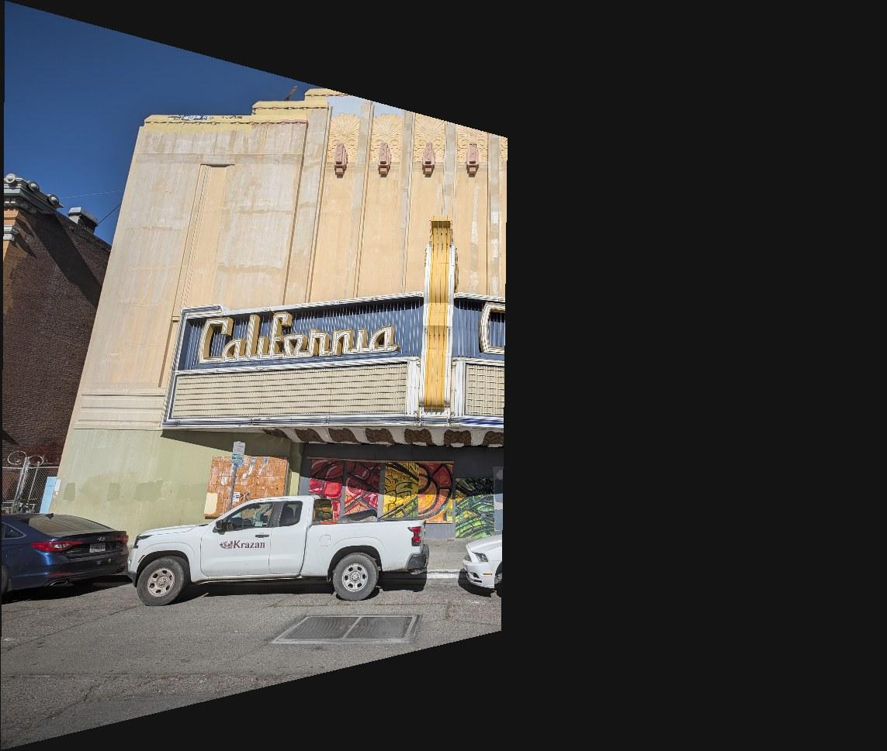
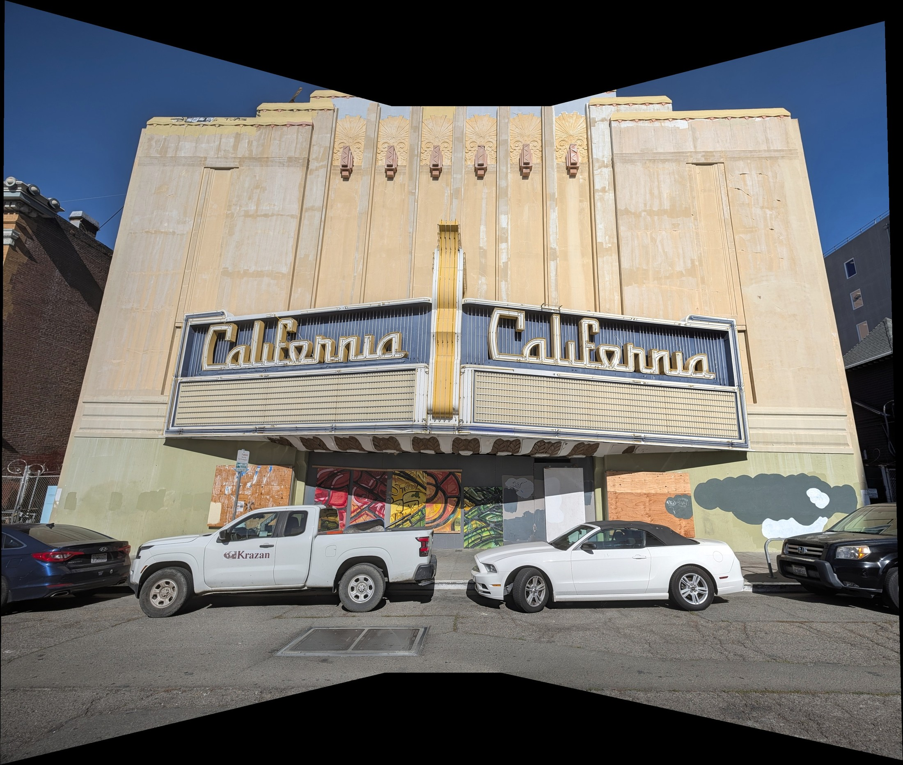

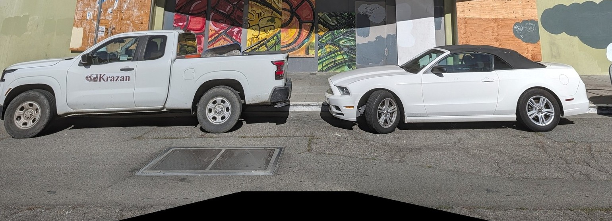
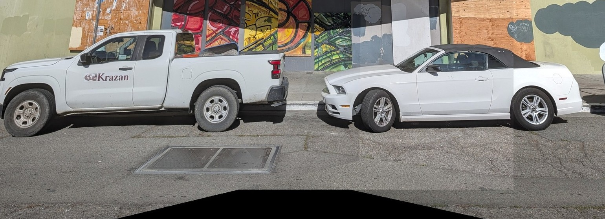
Mosaic 2 · Rooftop view (vertical)
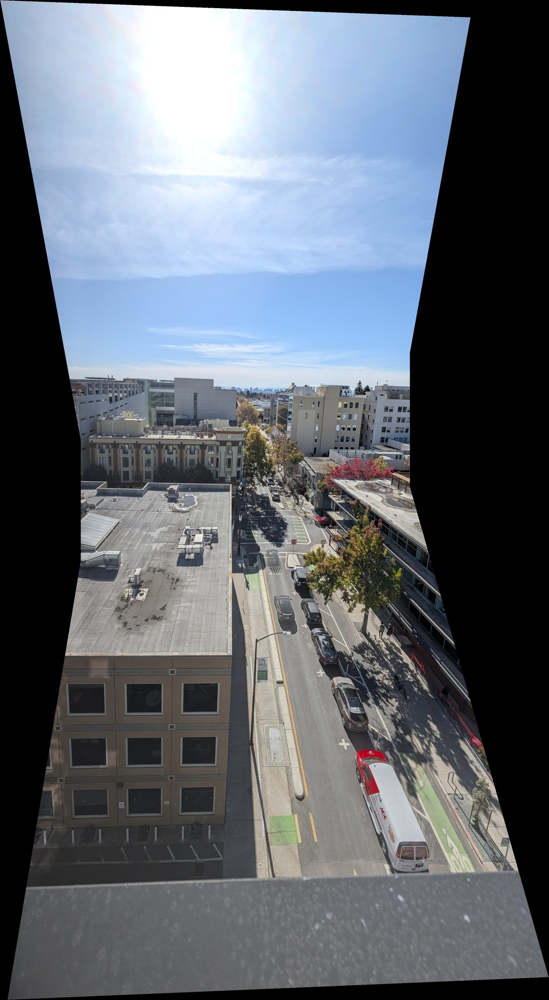

Mosaic 3 · Lawn and construction crane
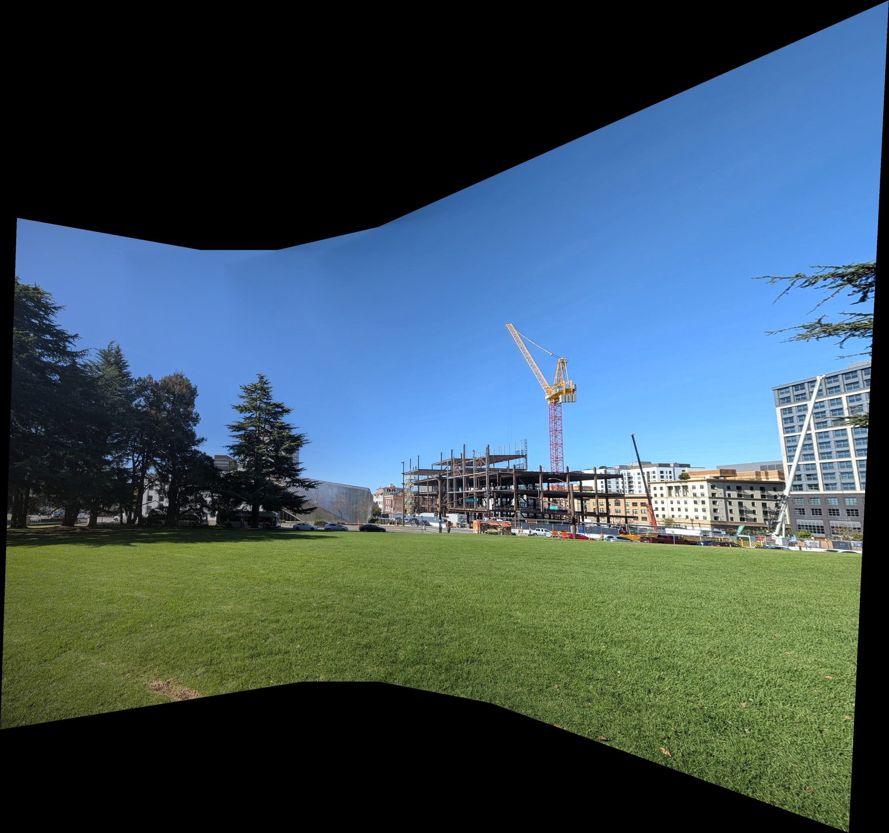

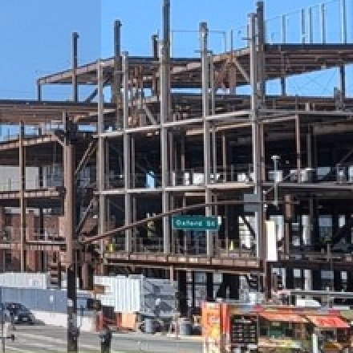
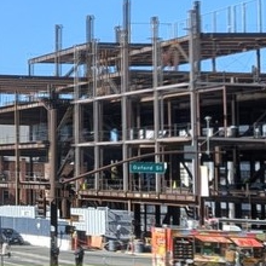
More mosaics
The same pipeline, with no per-set tuning, on six more sets:
| Mosaic | Photos | Canvas | Gains | Overlap difference (before → after gains) | Time |
|---|---|---|---|---|---|
| Golden Gate, no flag frame | 2 | 2872×1943 | 0.99 / 1.01 | 0.040 → 0.038 | 8.4 s |
| Tower, looking up | 3 | 3213×3736 | 0.97 / 0.98 / 1.05 | 0.120 → 0.111 | 17.2 s |
| Glass building | 3 | 4022×2985 | 0.96 / 1.01 / 1.02 | 0.073 → 0.070 | 14.7 s |
| Trees and parked cars | 4 | 4009×2994 | 1.04 / 1.00 / 0.98 / 0.95 | 0.087 → 0.071 | 18.3 s |
| Yellow building | 3 | 3423×3508 | 0.98 / 0.90 / 1.07 | 0.107 → 0.086 | 17.8 s |
| Theatre, second take | 3 | 3116×2697 | 1.02 / 1.00 / 0.98 | 0.072 → 0.067 | 11.0 s |
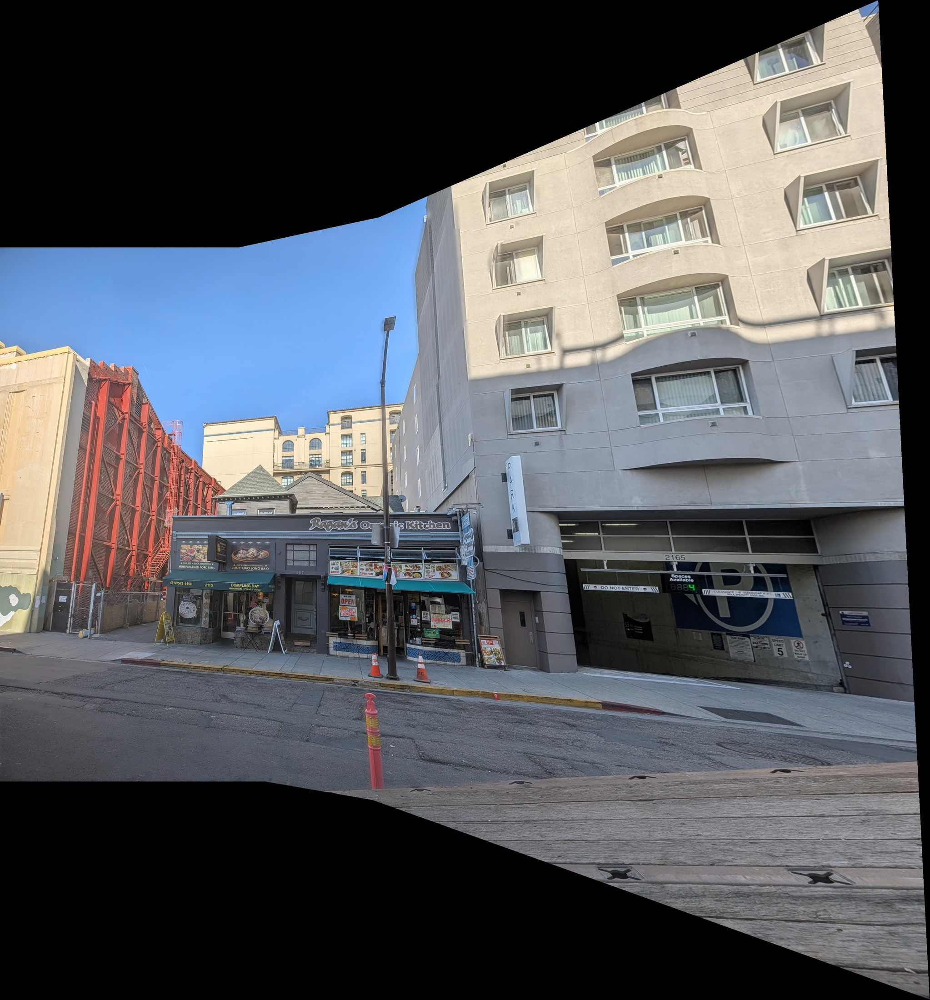

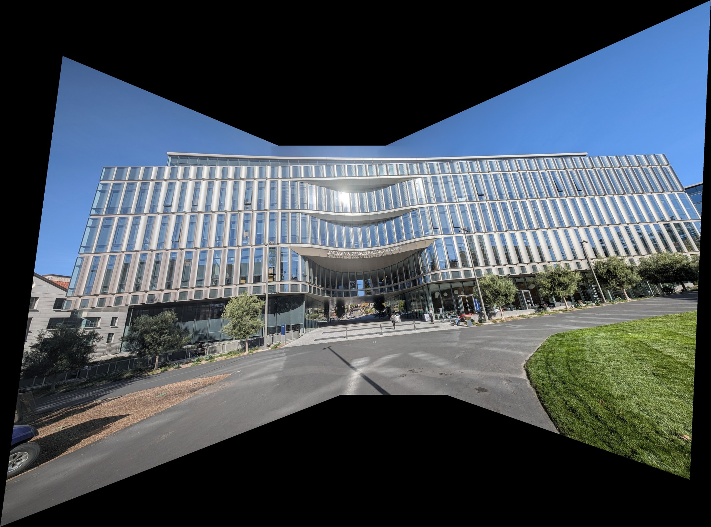

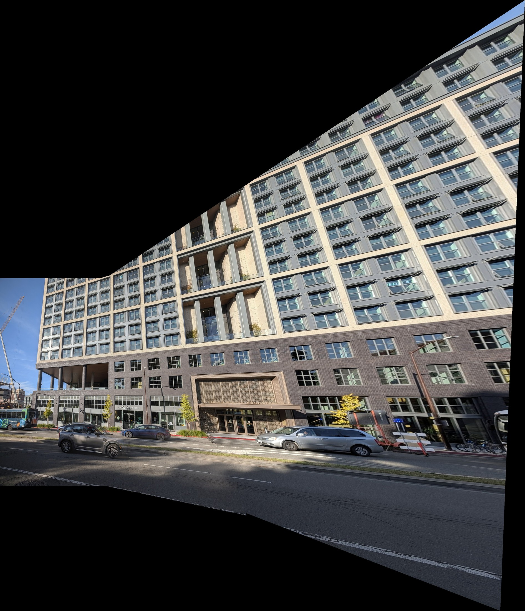

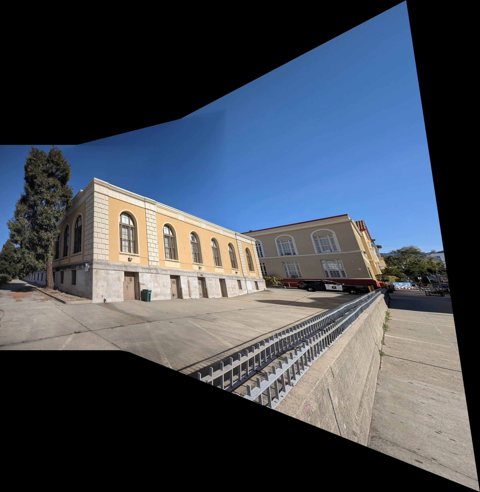


When a plane is the wrong surface
My Golden Gate set shows the limit of a planar mosaic. One photo is tilted about 40° from the reference, and on the reference's plane it gets stretched enormously. The homographies are correct; a plane just can't hold that much field of view. Without that photo (the 2-photo pan above) the mosaic is fine, and the cylinder below handles any width.
Part A.5: Bells & Whistles: Cylindrical and Spherical Mosaics
A plane cannot hold a wide sweep: at 90° from the reference, the planar projection goes to infinity. My nine-photo sweep turns 140° and covers 204° in total. On a cylinder (or sphere) around the camera, that's no problem. My pipeline, in five steps:
- Rotations from homographies. For a camera that only rotates, \(H = K R K^{-1}\). Projecting \(K^{-1}HK\) onto the nearest rotation matrix (via SVD) is the textbook shortcut, but it only minimizes an algebraic error. On my photos it reproduced the points only to 4.5–24.9 px.
- Fit the rotations in pixels. Instead I fit all eight neighbour rotations and one shared focal length jointly to the clicked points, with robust least squares (a small bundle adjustment). Seven of the eight pairs now fit to 0.8–2.6 px (the last one to 5.7 px). The fitted focal length is 1426.3 px, 1.003× the EXIF value of 1421.9 px. That's how I picked the radius: by measurement, and it agrees with the phone.
- Straighten. When you turn in place, every camera's x-axis lies in the horizontal plane, so "up" is the direction most perpendicular to all of them. The middle photo was tilted 4.3° from level; rotating the cylinder's axis onto the true up direction removes the wavy horizon.
- Inverse-sample from the originals. For every output pixel I compute its viewing ray on the surface, rotate it into each camera, project with \(K\), and sample that original photo bilinearly. No photo is warped twice, so the panorama keeps the sources' full resolution.
- Blend with the same gains and two-level blend as the planar mosaics.
| Pair | Turn | SVD rotation fit | Pixel-space joint fit |
|---|---|---|---|
| 1 → 2 | 21.6° | 19.2 px | 2.2 px |
| 2 → 3 | 17.7° | 11.0 px | 5.7 px |
| 3 → 4 | 18.1° | 8.5 px | 1.8 px |
| 4 → 5 | 15.0° | 4.6 px | 1.0 px |
| 5 → 6 | 17.7° | 4.5 px | 1.8 px |
| 6 → 7 | 14.2° | 24.9 px | 2.6 px |
| 7 → 8 | 19.1° | 10.0 px | 2.3 px |
| 8 → 9 | 17.1° | 9.1 px | 0.8 px |

More panoramas
Three more sweeps through the same panorama code, unchanged. The gap between the two rotation fits is even larger here: the SVD shortcut was off by up to 51 px, while the pixel-space fit stays within 4.4 px. The fitted focal lengths land within about 3% of EXIF.
| Panorama | Photos | Field of view | Focal (fit / EXIF) | SVD rotation fit | Pixel-space fit | Tilt removed | Final |
|---|---|---|---|---|---|---|---|
| Theatre street, all 7 frames | 7 | 128° | 1.008× | 5.7–15.6 px | 1.0–2.3 px | 2.4° | 3112×1804 |
| Old building, sweep 1 | 5 | 155° | 0.968× | 13.2–50.9 px | 1.5–4.4 px | 9.3° | 3416×1764 |
| Old building, sweep 2 | 4 | 117° | 0.968× | 9.0–22.5 px | 1.4–3.5 px | 1.2° | 2716×1780 |


def sample_surface(im, R, K, u0, v0, W, H, f, kind, box, chunk=256):
x0, y0, x1, y1 = box
out = np.zeros((y1 - y0 + 1, x1 - x0 + 1, 3), np.float32)
alpha = np.zeros(out.shape[:2], np.float32)
M = K @ R.T # reference ray -> camera k pixel
us = np.arange(x0, x1 + 1) + u0
for r in range(0, out.shape[0], chunk):
vs = np.arange(y0 + r, min(y0 + r + chunk, y1 + 1)) + v0
U, V = np.meshgrid(us, vs)
d = _rays(U, V, f, kind)
p = d @ M.T
front = p[..., 2] > 1e-6
z = np.where(front, p[..., 2], 1.0)
vals, a = _bilinear(im, p[..., 0] / z, p[..., 1] / z)
a = a * front
out[r:r + len(vs)] = vals * a[..., None]
alpha[r:r + len(vs)] = a
return out, alphadef straighten(Rs):
X = np.array([R[:, 0] for R in Rs])
w, V = np.linalg.eigh(X.T @ X)
up = V[:, 0] * np.sign(V[1, 0] or 1.0) # keep image-down convention (+y)
z = np.array([0.0, 0.0, 1.0]); z = z - z.dot(up) * up; z /= np.linalg.norm(z)
G = np.stack([np.cross(up, z), up, z]) # rows: new x, y, z in old coords
tilt = float(np.degrees(np.arccos(np.clip(abs(up[1]), -1, 1))))
return [G @ R for R in Rs], tiltWhat I Learned
The most important lesson was that the error you minimize matters as much as the model. Every step here has a cheap algebraic version and a geometric one. Solving \(Ah = b\) on raw pixels works, but normalizing first changes the condition number by orders of magnitude. Rounding \(K^{-1}HK\) to a rotation is one line of code, but it was off by up to 24.9 px, while fitting the same rotations to the actual points brought them to about 1–2 px. Both versions "work"; only one is accurate.
The second lesson was that bugs in blending are geometric, too. My first feathered mosaic had a sharp rectangular seam, because the unwarped reference photo fills its whole box and the distance transform never reached zero at its edge. Padding the mask by one pixel fixed it. That was a one-line fix, and I only found it because I looked at a zoomed crop rather than the full mosaic.